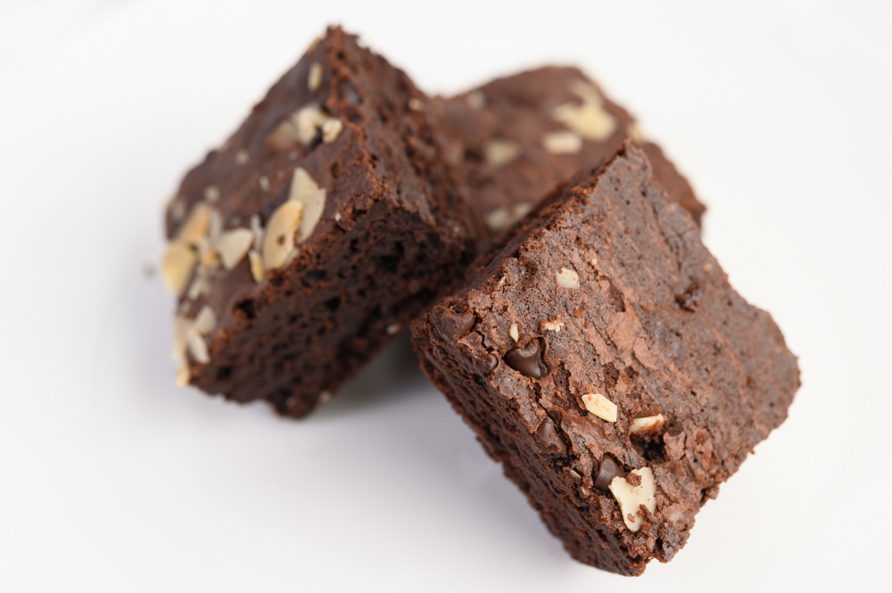

Brownies

Image by jcomp on Freepik
Description
This is the recipe for the best brownies in the world! A bold statement that everyone makes for their own recipe. However, that is the case here. If you are looking for
fudge-like brownie perfection, then look no further. This is the recipe for you!
Ingredients
- 2/3 cup all-purpose flour
- 3/4 teaspoon kosher salt
- 3 ounces unsweetened chocolate, chopped
- 1/2 cup unsalted butter
- 1 1/4 cups white sugar
- 2 large eggs
- 1 teaspoon vanilla extract
Steps
- Preheat oven to 170 degrees C.
- Mix flour and salt.
- Melt chocolate and butter over a pan of simmering water. Make sure it is smooth.
- Mix sugar and eggs in a mixing bowl for about 5 minutes.
- Once chocolate and butter mixture have cooled, throw all ingredients together and mix. Then place in a baking tray.
- Place in the oven for about 20-30 minutes. Prick with a toothpick in the center and it clean take out. Then leave to cool.